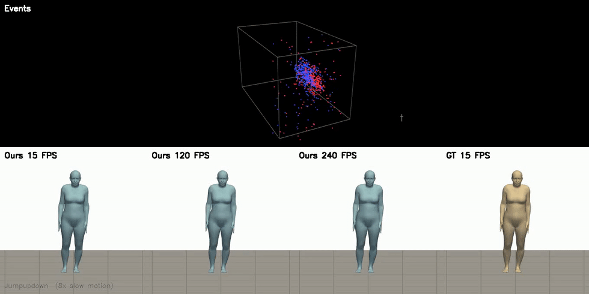
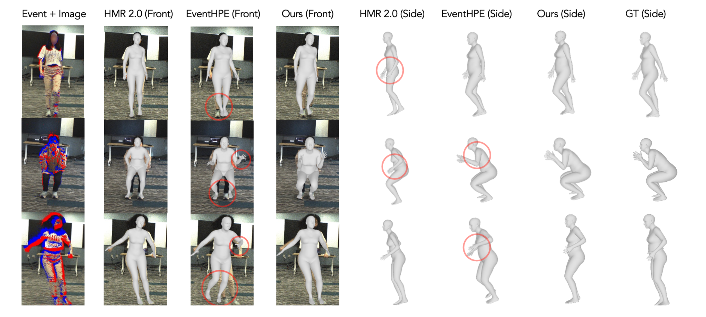
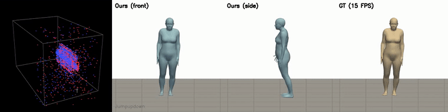
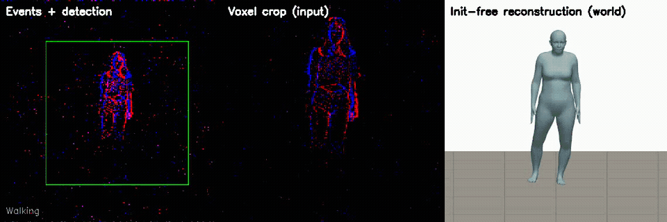
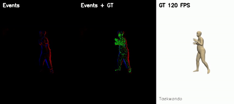
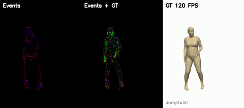
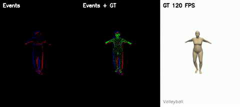
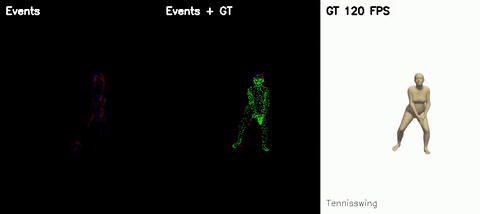

Continuous-Time Human Motion Field from Events
- Ziyun Wang¹𝄒²
- Ruijun Zhang¹
- Zi-Yan Liu¹
- Yufu Wang¹
- Kostas Daniilidis¹𝄒³
TL;DR: A recurrent network predicts a continuous-time human motion field directly from events, cutting joint errors by 23.8% and compute by 69% compared to prior event-based methods.

Top: the raw event stream as a 3D space-time (x, y, t) cloud. Bottom: the same latent code from one forward pass, queried at 15, 120, and 240 FPS, next to the 15 FPS ground-truth labels (8× slow motion). More timestamps, smoother motion — nothing is interpolated or retrained.
Abstract
This paper addresses the challenges of estimating a continuous-time human motion field from a stream of events. Existing Human Mesh Recovery (HMR) methods rely predominantly on frame-based approaches, which are prone to aliasing and inaccuracies due to limited temporal resolution and motion blur. In this work, we predict a continuous-time human motion field directly from events by leveraging a recurrent feed-forward neural network to predict human motion in the latent space of possible human motions.
Prior state-of-the-art event-based methods rely on computationally intensive optimization across a fixed number of poses at high frame rates, which becomes prohibitively expensive as we increase the temporal resolution. In comparison, we present the first work that replaces traditional discrete-time predictions with a continuous human motion field represented as a time-implicit function, enabling parallel pose queries at arbitrary temporal resolutions.
Despite the promises of event cameras, few benchmarks have tested the limit of high-speed human motion estimation. We introduce Beam-splitter Event Agile Human Motion Dataset—a hardware-synchronized high-speed human dataset to fill this gap. On this new data, our method improves joint errors by 23.8% compared to previous event human methods while reducing the computational time by 69%.
Qualitative results
Our method recovers sharp, temporally coherent human motion from events alone, and can be queried at any timestamp rather than at a fixed frame rate.

Continuous-time demo
Because the motion field is continuous in time, each clip can be decoded at an arbitrary number of timestamps rather than only at the labelled keyframes — genuine slow motion rather than interpolated frames.

Left to right: raw events as a 3D space-time (x, y, t) cloud, our prediction from the front and side, and the ground truth.
Initialization-free tracking (v1.1)
The paper protocol conditions each clip on a known initial pose. The v1.1 release of the code removes that requirement entirely: the pipeline runs from the event stream and a detector box alone. The initial pose — including the front/back facing direction — is regressed by a transformer over polarity-preserving event count voxels, and an optional contact-ground refinement pins the sequence's depth using rig geometry only.

Left: events with the detected box. Middle: the polarity-preserving voxel crop the transformer sees. Right: the initialization-free reconstruction placed in the world with its predicted, contact-grounded translation.
The BEAHM dataset
BEAHM (Beam-splitter Event Agile Human Motion) is captured with a hardware-synchronized rig: an event camera and a frame camera share one optical axis through a beam splitter, and SMPL ground truth is fit by multi-view optimization over four additional synchronized cameras, at a true 120 FPS. Beyond the basic training/test motions, the release includes an extreme subset — martial arts, jumps with full twists, ball sports — at speeds where frame cameras blur.




Left to right in each clip: raw events, the GT mesh vertices projected onto the events (exact calibration chain, lens distortion included), and the 120 FPS ground truth seen from the event camera, 4× slow motion.
Acknowledgements
We gratefully acknowledge the support of the GRASP
Laboratory at the University of Pennsylvania.
BibTeX
@inproceedings{wang2025continuous,
title={{Continuous-Time Human Motion Field from Events}},
author={Wang, Ziyun and Zhang, Ruijun and Liu, Zi-Yan and Wang, Yufu and Daniilidis, Kostas},
booktitle={International Conference on Computer Vision (ICCV)},
year={2025}
}